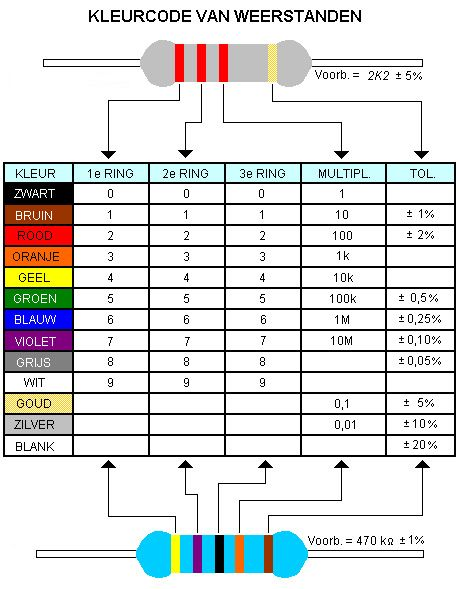
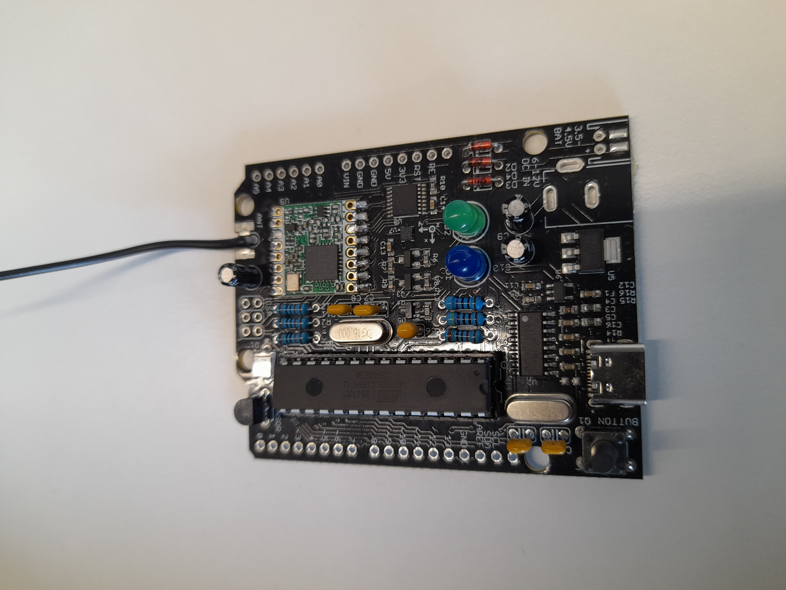

Samenvatting van de eerste sessie elektronica.
Inleiding
Tijdens de eerste sessie werd eerst een korte uitleg gegeven
over verschillende basiscomponenten.
Daarna soldeerden we op een Dramco printplaat een aantal
van deze componenten.
De basiscomponenten.
Groepen
Er bestaan passieve componenten zoals:
- Weerstanden
- Condensatoren
- Spoelen
Er bestaan ook halfgeleidende componenten zoals:
- Diodes
- Transistoren
- OPAMP’s
- IC’s
Weerstanden
Worden gekenmerkt door een grootte in ohm, een tolerantie (van 0,05 tot 20%)
en een maximum vermogen. Hun functie is om de stroom te beperken
door weerstand te bieden aan de elektronen.
Bij THT-weerstanden wordt de weerstandswaarde en de tolerantie
gegeven door een kleurencode:

Bron afbeelding
Een speciale vorm van weerstanden zijn de potentiometers. Dit zijn weerstanden waarvan je de waarde kunt veranderen in een vast bereik.
Condensatoren
Worden gekenmerkt door een waarde in farad, een tolerantie (-20, +50%)
en een maximum spanning. Hun functie is om elektrische lading (energie) op te slaan.
Er zijn 2 soorten condensatoren:
- Gepolariseerd
- Niet gepolariseerd
Bij de gepolariseerde moet je aandachtig zijn dat je deze correct aansluit, anders is er kans op een explosie van de condensator.
Diodes
Hun functie is om de stroom maar in één richting door te laten. Hier is
het dus ook belangrijk om aandachtig te zijn bij het aansluiten. Bij verkeerde
aansluiting zal de diode de stroom tegenhouden en werkt de schakeling niet zoals
verwacht.
Een speciale soort van diodes zijn de lichtuitstralende diodes of kortweg LED’s.
Zoals de naam doet vermoeden stralen deze licht uit als er stroom doorloopt.
IC's
Een klein blokje waarin vele microcomponenten als transistoren, weerstanden en condensatoren verwerkt zitten. Hun functie is om signalen te verwerken, data op te slaan, logische bewerkingen uitvoeren of functies in apparaten aansturen.
Microcontrollers
Wat zijn microcontrollers?
Microcontrollers zijn als het ware kleine computers op één chip. Deze hebben
in tegenstelling tot andere computers alle benodigde elementen om te werken aan
boord. Door hun compacte vorm kunnen ze makkelijk geïntegreerd worden in elektronische
apparaten en verbruiken ze heel weinig energie.
Enkele voorbeelden van microcontrollers zijn:
- Arduino UNO (ATmega328P)
- Raspberry Pi Pico
Internet of things
Het internet of things of kortweg IoT is het netwerk van alledaagse apparaten
die met het internet verbonden zijn en automatisch gegevens uitwisselen.
Wat houdt het precies in?
- Verbonden apparaten: objecten kunnen sensoren en software bevatten die continu data meten en doorsturen.
- Slimme interactie: ze communiceren niet alleen met jou maar ook met elkaar.
- Automatisering en efficiëntie: door die constante datastroom kunnen processen sneller, veiliger en energiezuiniger verlopen.
Waar kan je het tegenkomen?
- In huis: slimme verlichting, thermostaten, beveiligingscamera’s.
- In het verkeer: auto’s die verkeersinformatie delen.
- In steden en industrie: sensoren die energieverbruik, verkeer of machines monitoren.
Praktisch werk
Wij soldeerden op een door de KU Leuven samengestelde Dramco-printplaat een aantal
componenten. Namelijk:
- 4 Weerstanden van 10 kΩ
- 2 Weerstanden van 470 Ω
- 1 Crystal oscillator van 12 MHz
- 1 Crystal oscillator van 16 MHz
- 1 Lichtsensor
- 1 LoRa-module
- 3 Diodes
- 4 Condensatoren van 22 pF
- 1 Condensator van 110 nF
- 3 Condensatoren van 10 µF
- 2 LED's
- 1 Temperatuursensor
- 1 IC-socket
- 1 Drukknop
- 1 Antenne (draadje van 8,2 cm lang)
Het afgewerkte product ziet er dan als volgt uit:
